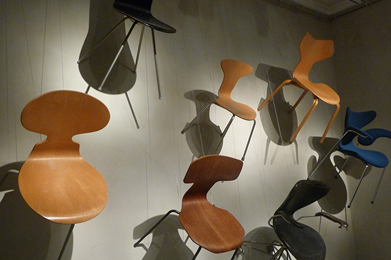
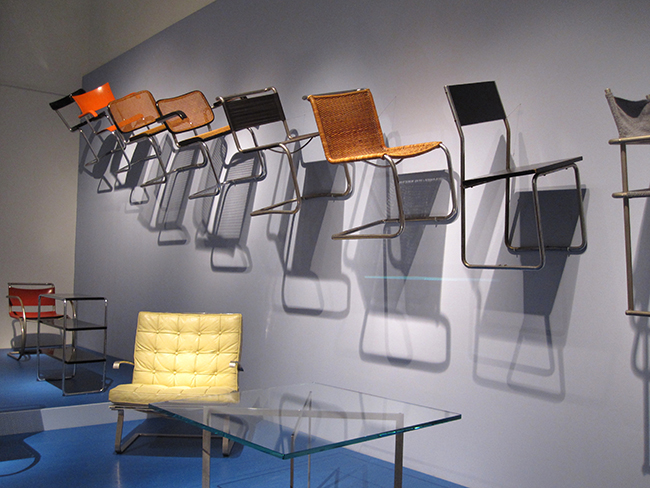

Good Designs In Folk
The exhibition presents the chair designs that have been existed in folks hndreds to thousands of years.
Date: 2016.12.05 – 2016.12.17
Location: Today Art Museum 3rd floor
Ticket: $10 Adults $6 Students
The exhibition presents the chair designs that have been existed in folks hndreds to thousands of years. Date: 2016.12.05 – 2016.12.17 Location: Today Art Museum 3rd floor Ticket: $10 Adults $6 Students

Arne Jacobson
Arne Jacobson
The exhibition presents the chairs designed by Danish Designer Arne Jacobson.
Date: 2017.01.23 – 2017.02.25
Location: 1st Floor, College of Design,
Central Academy of Fine Arts
Ticket: $10 Adults $6 Students
The exhibition presents the chairs designed by Danish Designer Arne Jacobson. Date: 2017.01.23 – 2017.02.25 Location: 1st Floor, College of Design, Central Academy of Fine Arts Ticket: $10 Adults $6 Students

Bauhaus and Chair Design